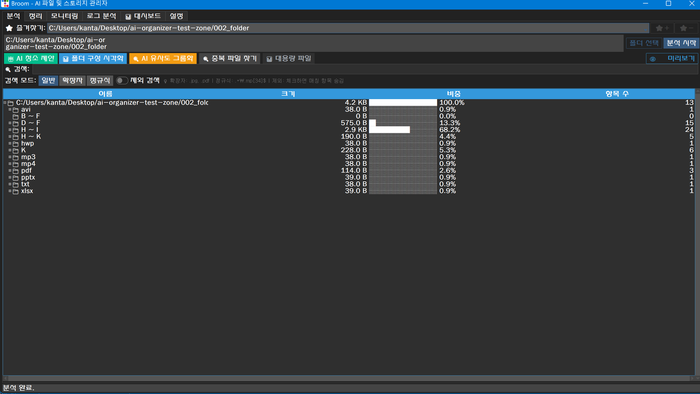
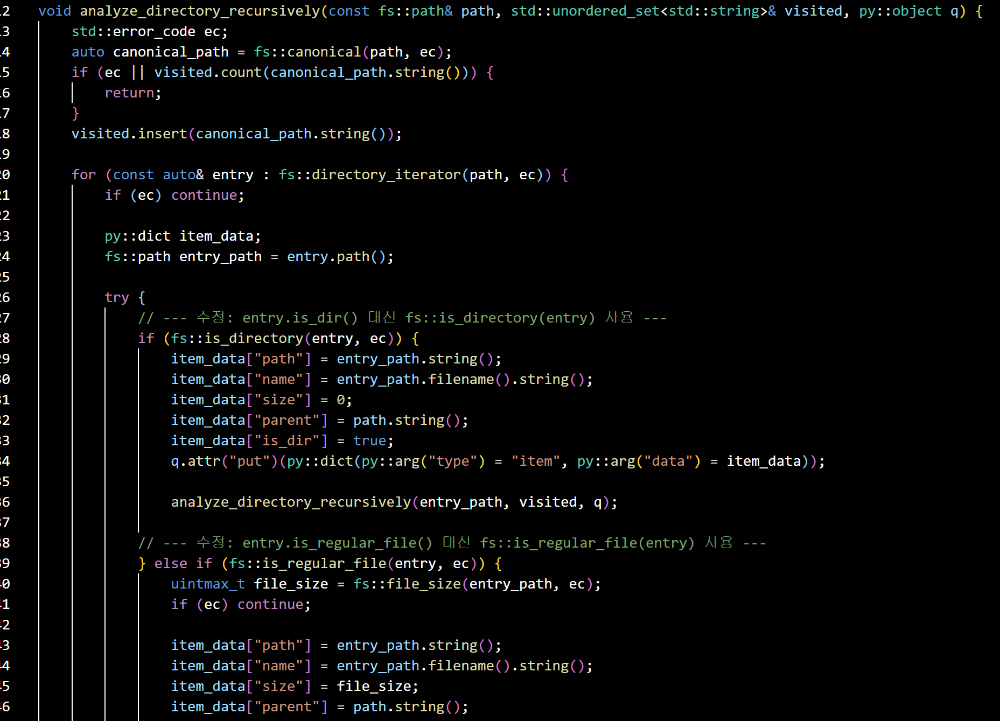
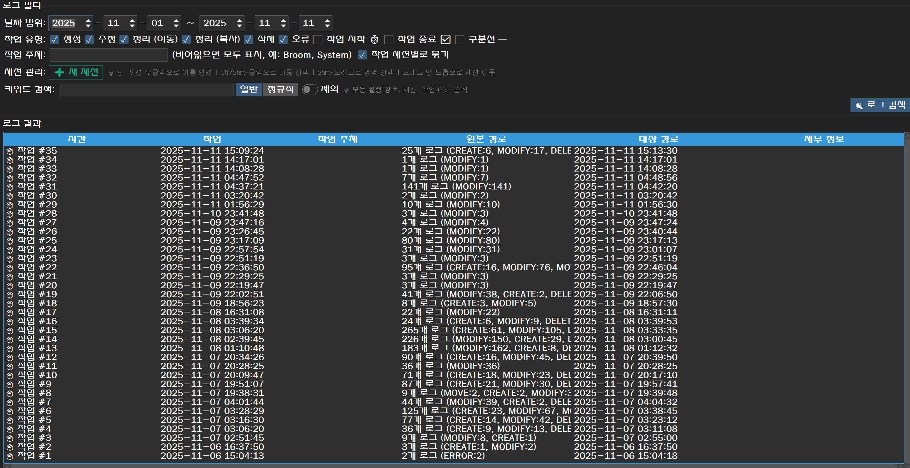

프로젝트 개요: Broom 🧹
문제 정의
Windows 데스크탑 사용자는 '다운로드'나 '바탕화면' 폴더에 누적되는 수천 개의 파일을 수동으로 관리해야 하는 비효율을 겪습니다. 기존 클리너 앱은 스캔 속도가 느리거나, 사용자가 신뢰할 수 없는 '블랙박스'처럼 동작하는 문제가 있었습니다. 또한, 파일 및 데스크탑 지식이 부족한 사용자에게 친화적이지 않으며 중요한 파일을 실수로 삭제하는 등의 문제가 발생하기도 했습니다. Broom은 AI 기반 지능형 자동화와 투명한 로깅 시스템으로 이러한 문제를 해결합니다.
아키텍처 / 설계
AI 기반 자동화와 안정성이라는 두 가지 핵심 가치를 중심으로 하이브리드 아키텍처를 설계했습니다.
- 멀티-스레드 스토리지 분석: Python의 threading과 queue를 활용한 비동기 스캔 시스템으로 GUI 응답성을 유지합니다. C++17 std::filesystem 모듈도 개발했으나, 한글 경로 호환성을 위해 현재는 Python fallback을 사용합니다. [cite: storage_analyzer.py]
- 지능형 서비스 (AI): ai_services.py를 중앙 허브로 두어, 파일 정리, 로그 분석, 캐시 감지 등 모든 AI 기능이 Gemini API를 호출하도록 설계했습니다. [cite: ai_services.py]
- 백그라운드 자동화 (Python): watchdog과 schedule 라이브러리 기반 스레드가 메인 GUI와 독립적으로 동작하며 실시간 파일 모니터링과 예약 작업을 수행합니다. [cite: watcher_thread.py, scheduler_thread.py]
다운로드
Broom v1.0.0 for Windows
- Windows 10/11 (64-bit)
- 설치 불필요 (압축 해제 후 바로 실행)
- 파일 크기: 134MB
- MIT License (무료 오픈소스)
여러분의 소중한 피드백을 기다립니다!
빠른 시작
- 1 Zip 파일 다운로드
- 2 압축 해제
- 3 Broom.exe 실행
- 4 언어 및 모드 선택
Windows SmartScreen 경고
"Windows protected your PC" 경고가 나타나면 "More info" → "Run anyway"를 선택하세요. Broom은 코드 서명되지 않은 오픈소스 프로그램입니다.
핵심 기능
멀티-스레드 스토리지 분석
비동기 큐 기반 실시간 스캔

대용량 드라이브 분석 시 GUI가 멈추는 문제를 해결하기 위해, threading과 queue를 활용한 비동기 스캔 시스템을 구현했습니다.
Python Path.iterdir() 기반으로 한글 경로를 완벽하게 지원하며, 메인 스레드를 차단하지 않고(non-blocking) 스캔 결과를 실시간으로 UI에 스트리밍합니다. 추가로 C++17 std::filesystem + pybind11 고성능 모듈도 개발하여 필요 시 전환 가능합니다.
AI 기반 지능형 자동화
Gemini API 중앙 허브 구조

단순 규칙 기반 정리를 넘어, ai_services.py 중앙 허브를 통해 Gemini API 기반 '지능형' 기능을 구현했습니다.
- AI 커스텀 파일 정리: "스크린샷만 모아줘" 같은 자연어 명령을 AI가 실행 가능한 JSON 계획으로 변환하여 자동 수행합니다.
- AI 캐시 자동 감지: AI가 설치된 프로그램의 캐시 경로 패턴을 자동으로 추론하여 불필요한 로그를 영구 필터링합니다.
- AI 로그 요약: 수집된 로그 세션을 AI가 분석하여 "무슨 일이 있었는지" 자연어로 요약하고 인사이트를 제공합니다.
기술 스택
Desktop GUI
Core & Performance
AI Integration
System Tools & Libs
역할 및 회고
구현 작업 내역
- Python ttkbootstrap 기반 멀티-탭 GUI 아키텍처 설계 및 3단계 사용자 모드(Simple/General/Pro) 구현
- threading + queue 기반 비동기 스토리지 분석 시스템 및 C++ 고성능 모듈(pybind11) 개발
- Google Gemini API 중앙 허브 구조 및 AI 핵심 기능 (파일 분류, 로그 분석, 캐시 감지) 구현
- watchdog, schedule을 이용한 실시간 파일 모니터링 및 자동화 스케줄러 개발
- 4개 국어 다국어 지원(한/영/일/중) 및 동적 테마/폰트 설정 시스템 구현
결과 및 성과
- 비동기 멀티-스레드 구조로 대용량 디렉토리 스캔 중에도 GUI 응답성 유지 (C++ 모듈 준비 완료)
- Gemini API 기반 '로그 요약', 'AI 캐시 자동 감지', '커스텀 파일 정리' 등 차별화된 지능형 기능 구현
- 3단계 사용자 모드(Simple/General/Pro), 4개 국어, 15개 테마로 높은 접근성 및 사용자 경험 확보
- 시스템 트레이, Windows 작업 스케줄러, watchdog 연동으로 완전 자동화된 백그라운드 모니터링 시스템 구축
배운 점
Python GUI 앱에서 멀티-스레딩과 큐를 활용한 비동기 처리 패턴을 익혔으며, C++과 pybind11을 통한 네이티브 확장 모듈 개발 경험을 쌓았습니다. 또한, 메인 UI 스레드를 차단하지 않는 백그라운드 서비스 아키텍처를 깊이 이해했습니다. Gemini API의 프롬프트 엔지니어링을 통해 '캐시 경로 추론', '로그 요약', '커스텀 파일 분류' 같은 복잡한 작업을 안정적인 JSON 포맷으로 유도하는 노하우를 습득했고, 한글 경로 처리의 중요성과 크로스-플랫폼 호환성 이슈를 경험했습니다.
향후 개선 계획
- C++ 모듈의 한글 경로 호환성 개선 후 성능 최적화 옵션으로 제공
- 대시보드 탭에 시간대별/용량별 로그 통계 그래프를 추가하여 시각화 기능 강화
- 향후 Flutter 또는 Flet 등 모던 UI 프레임워크로 마이그레이션하여 크로스-플랫폼 지원 확대
- AI 기반 파일 중복 제거 및 스마트 폴더 추천 기능 추가